01 — The questionOne event, many possible pasts
A single gravitational-wave event is rarely enough to say where it came from. Its parameters are measured with large uncertainties, and several formation models can usually explain it equally well. What separates the models is not the value they predict for one event, but the pattern they predict for many: how mass, spin and redshift are correlated across the population.
Black holes born from isolated massive stars are relatively light and spin slowly. Second-generation black holes, the remnants of earlier mergers, are heavier and spin fast, and because they need time to find a new partner they merge later. Primordial black holes that grow by accretion follow a mass–spin path unlike any stellar population. Plotted against the right quantities, these channels fall in different regions, in the same way that different kinds of stars occupy different parts of the Hertzsprung–Russell diagram. The phase space is that diagram for compact binaries.
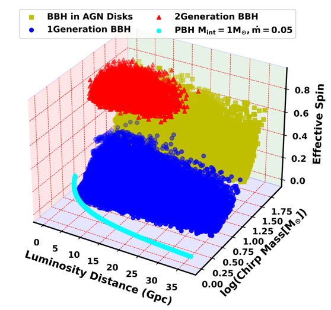
02 — How it worksPredict, observe, compare
The phase space turns a question about formation history into a question about geometry: how much of the observed population lies where a given channel says it should? The method has three steps.
Trajectories for every channel
A simple physical model of each channel's masses, spins and merger history gives the region it fills across cosmic time, its trajectory. Varying the model's key parameters, such as the typical mass and spin, turns each channel into a whole family of trajectories.
The events in the same space
Every detected event enters with its full posterior samples. Adding them gives the observed phase space, which keeps each event's measurement uncertainty. It can be built from the chirp mass and effective spin, or from the mass and spin of each black hole.
Measure the overlap
After removing what the detectors could not have seen, the overlap between each trajectory and the observed phase space measures how strongly the data support it. Evaluated event by event, it gives every event a weight for each channel.
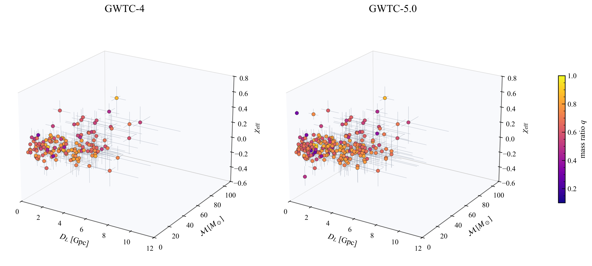
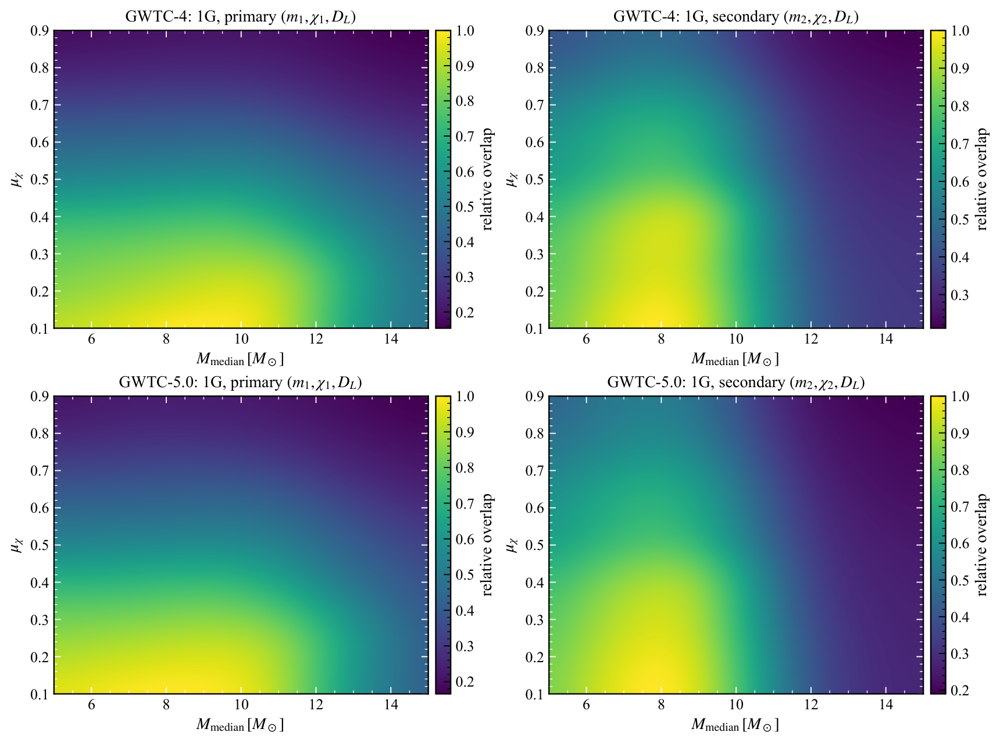
The approach is complementary to hierarchical population inference. Its strength is transparency: every conclusion can be traced back to the events that drive it, and new formation channels or new observables can be added simply as new trajectories in the same space.
03 — What it has foundThree questions about compact objects
Where do stellar black holes stop?
First-generation black holes run out near 45 solar masses, the imprint of the pair-instability mass gap.
GWTC-3 · Phys. Rev. D 2025Which events look unusual?
Classifying about 90 events, and a shared primordial-like trajectory for GW190425 and GW230529.
GWTC-3 + O4 · MNRAS 2025What lives below 5 M☉?
Neutron stars, their merger remnants, light black holes or primordial black holes, weighed event by event.
The pair-instability mass gap
Where do black holes formed directly from stars run out?
Stellar theory predicts a gap in the black hole mass spectrum. In the cores of very massive stars, photons become energetic enough to turn into electron–positron pairs; the core loses pressure, collapses and ignites explosively, tearing the star apart in a pair-instability supernova that leaves no black hole behind. Black holes formed directly from stars should therefore stop at around 40–50 solar masses.
Heavier black holes can still form through repeated mergers, but they look different: they spin fast, and because they take time to assemble they appear mostly at lower redshift. In the phase space this produces a clear signature, with slowly spinning first-generation black holes confined below the gap and fast-spinning second-generation black holes extending into it.
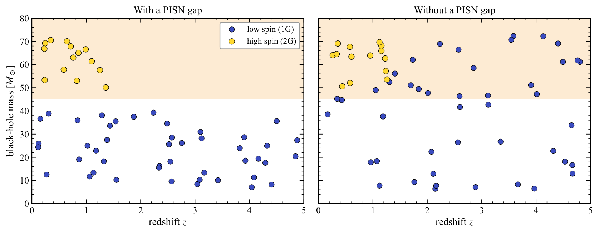
We applied the phase space to the binary black holes of GWTC-4.0 and, separately, GWTC-5.0, with two channels: first- and second-generation black holes. Turning the overlaps into mass distributions gives the key result: the first-generation population is strongly suppressed above about 45 solar masses, while second-generation black holes continue beyond it. Summarized by the mass below which 99.7% of the first-generation distribution lies, the scale is 45.5 and 45.4 M☉ for the heavier and lighter black hole in GWTC-4.0 and 45.4 and 45.3 M☉ in GWTC-5.0, consistent with the predicted pair-instability limit. The two catalogues tell the same story.
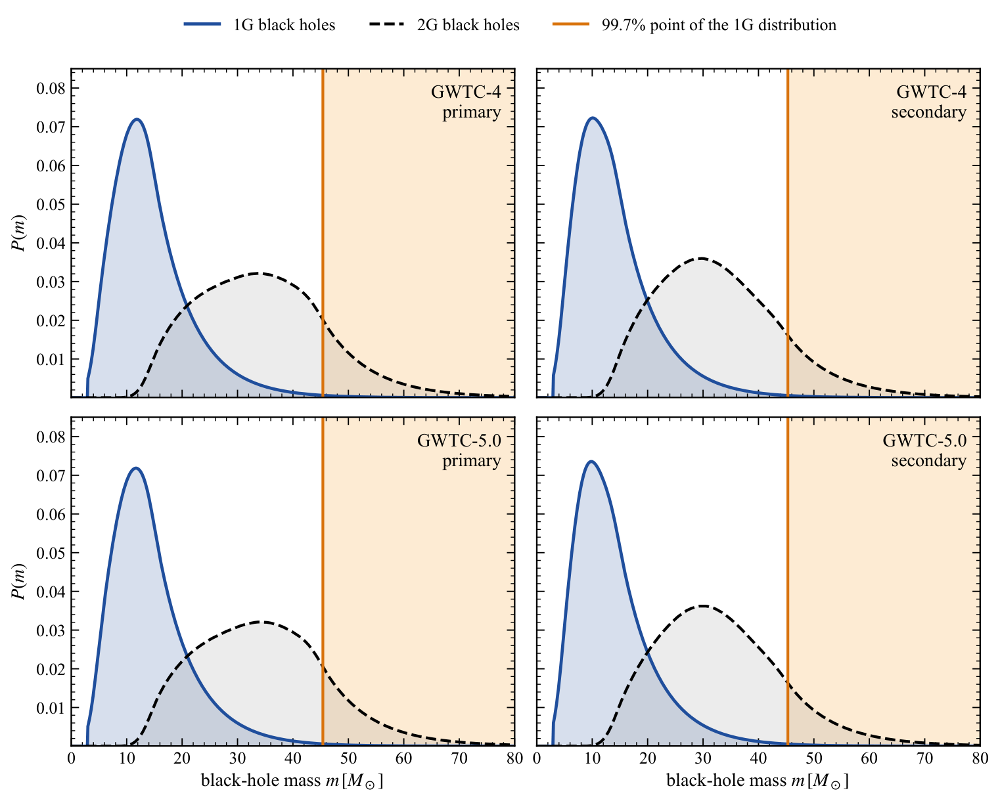
The same analysis assigns every event a weight for each channel, separately for its heavier and lighter black hole, so the population result can be traced back to the individual binaries that drive it.
Allowing the width and the high-mass tail of the mass model to vary as well, and summing over them, gives almost the same scale, about 45.5 M☉. Because the exact number depends on the assumed shape of that tail, it is best read as a summary of where first-generation black holes run out rather than a precise measurement of the gap edge; connecting it to nuclear physics needs further modelling of metallicity, stellar winds and delay times.
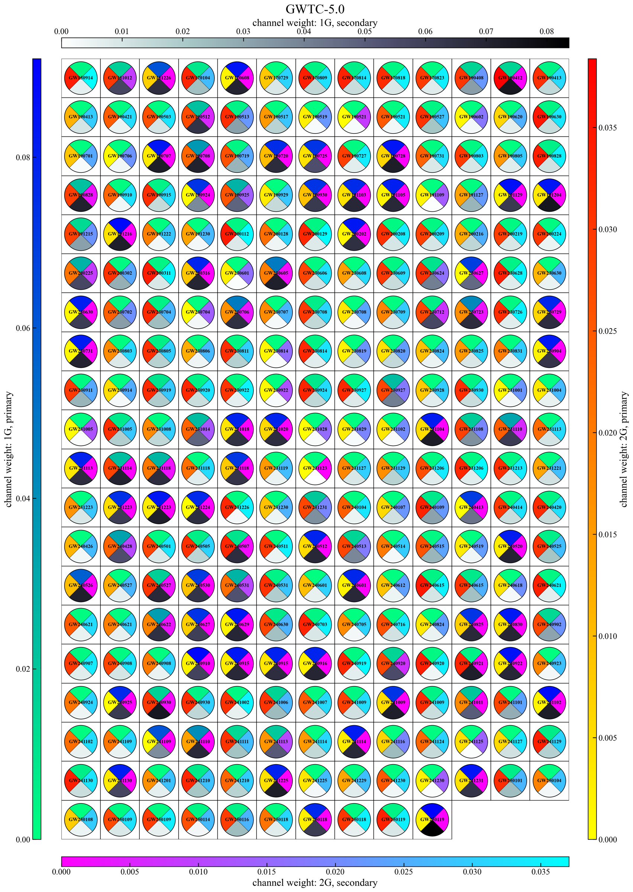
Events that standard channels struggle to explain
Which binaries do not fit the usual stellar pathways?
The phase space was first applied to the GWTC-3 catalogue together with GW230529, using four channels: first-generation black holes from stellar collapse, second-generation black holes from hierarchical mergers, black holes formed in the gas disks of active galactic nuclei (AGN), and primordial black holes (PBHs) that grow by accretion. For each, we mapped the support for the two parameters that shape its trajectory most.
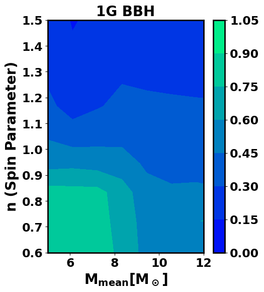
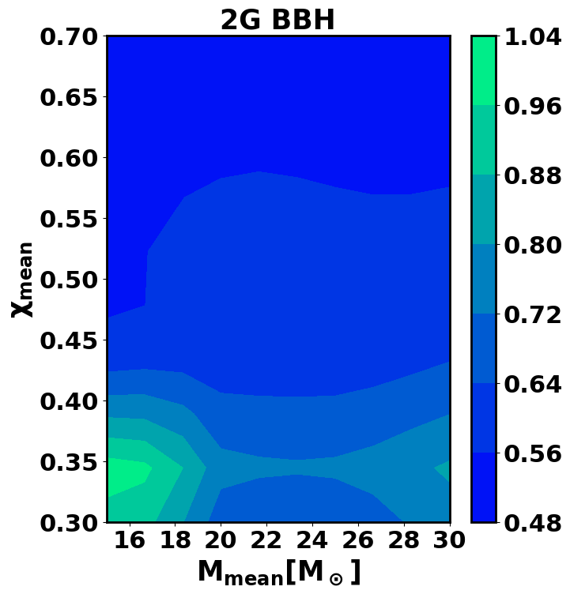
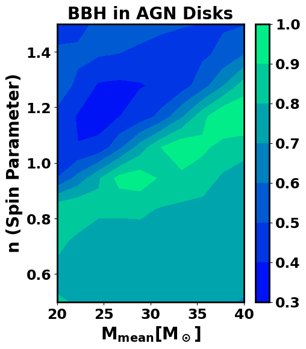
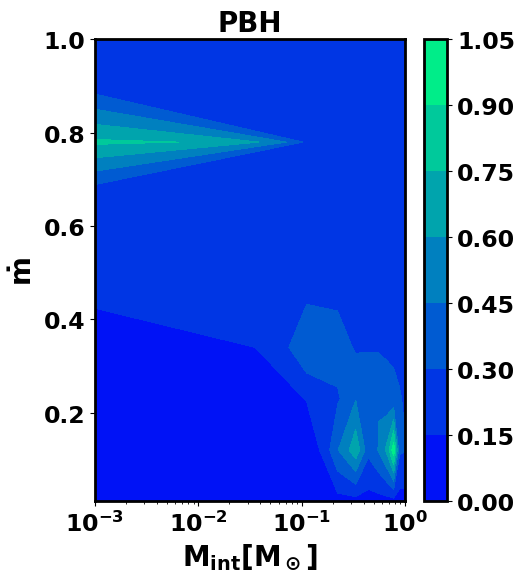
First generation
A low typical mass and slowly growing spins, reflecting the many light, nearly non-spinning events in GWTC-3.
AGN disks
A higher typical mass with some spin growth, driven by a few heavier events with non-zero spin.
Second generation
Less conclusive, since its region overlaps with others; a typical mass near 16 M☉ with spins around 0.35 is mildly preferred.
Primordial black holes
Low support overall, with two small open regions, including initial masses of 0.1–1 M☉ with low accretion.
Most events sit comfortably in the first- or second-generation channels. Six low-mass events do not: GW190425, GW190814, GW190917, GW191219, GW200115 and GW230529 have little support from any standard black hole channel.
Two of them stand out. GW190425 and GW230529 fall on the same primordial black hole trajectory, consistent with a sub-solar-mass black hole that grew to its observed mass and spin by accretion. This is a hint rather than a detection, and astrophysical explanations remain open, but it shows how the phase space can single out events that deserve a closer look.
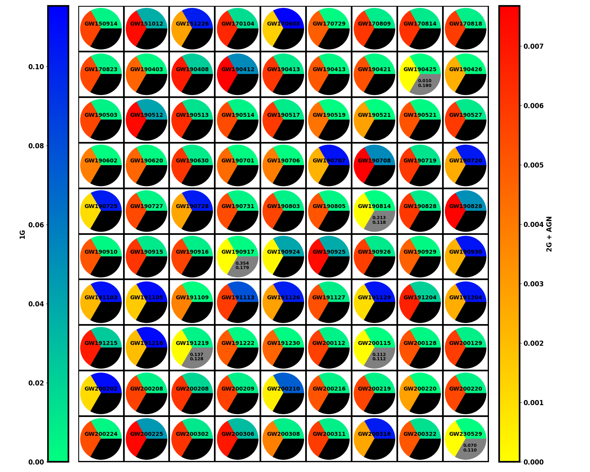
Between neutron stars and black holes
Is a 2–5 M☉ object a heavy neutron star, a light black hole, or something else?
Below about 5 solar masses the possibilities multiply: neutron stars, the remnants of neutron star mergers, unusually light black holes formed when much of a star falls back after a supernova, or primordial black holes. We built a dedicated low-mass phase space of component mass, spin and distance and applied it to the eight events with at least one component below 5 M☉: seven from GWTC-3 and GW230529 from the fourth observing run.
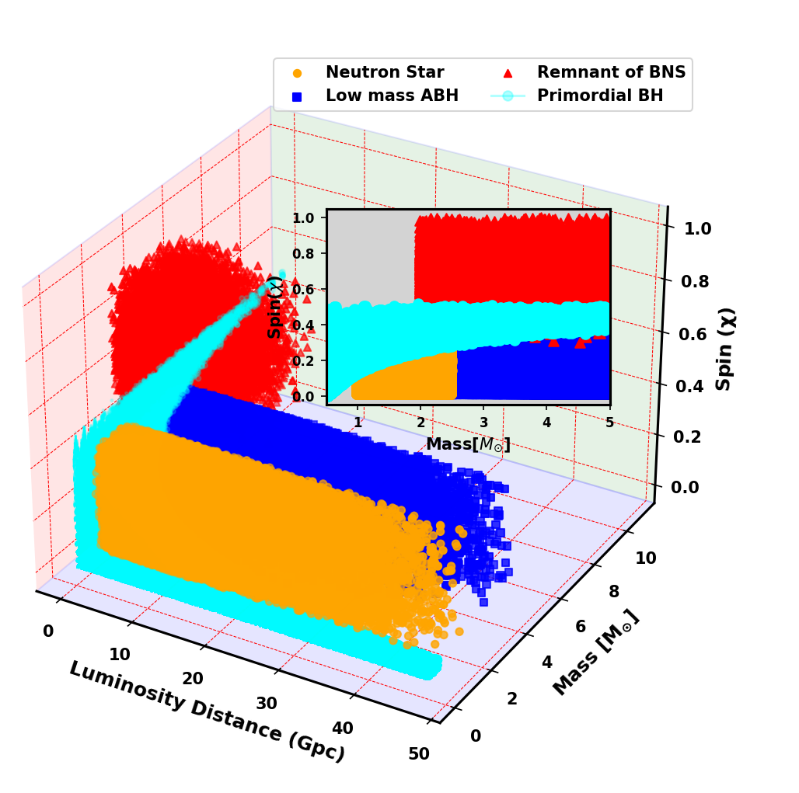
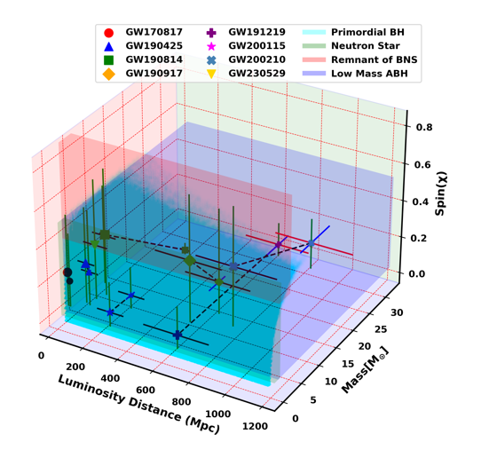
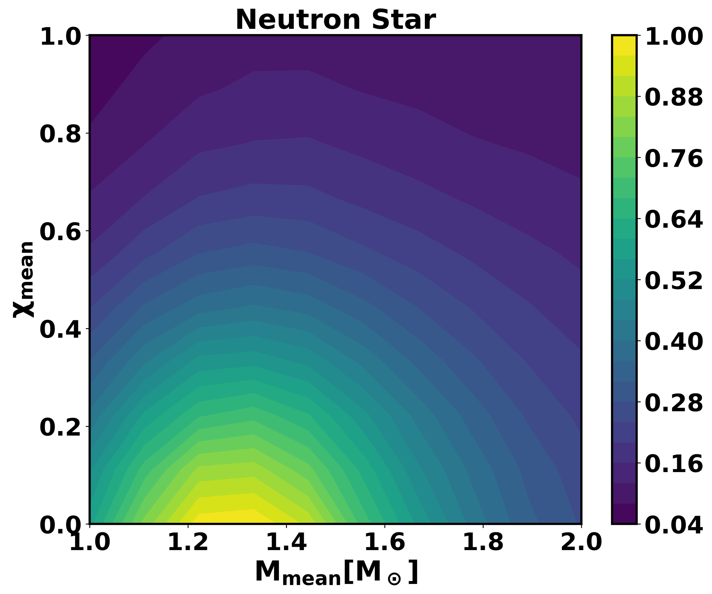
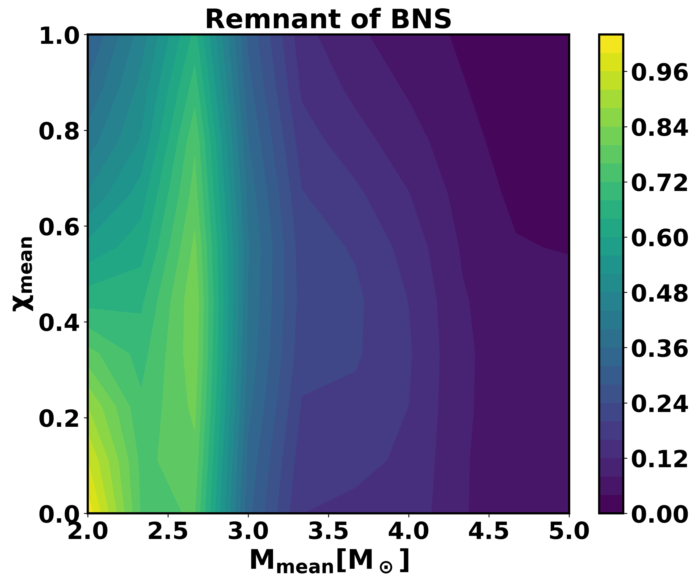
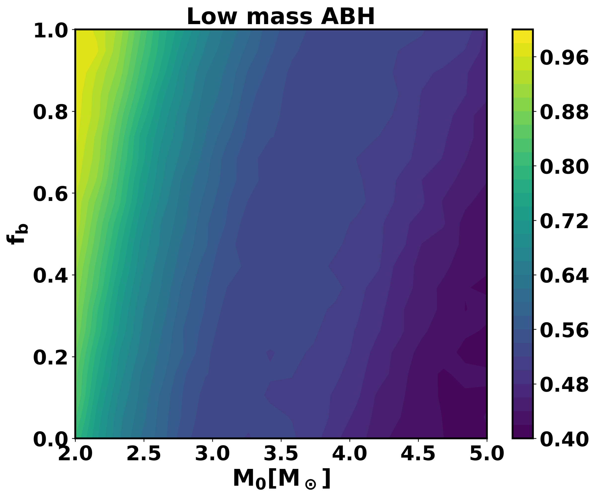
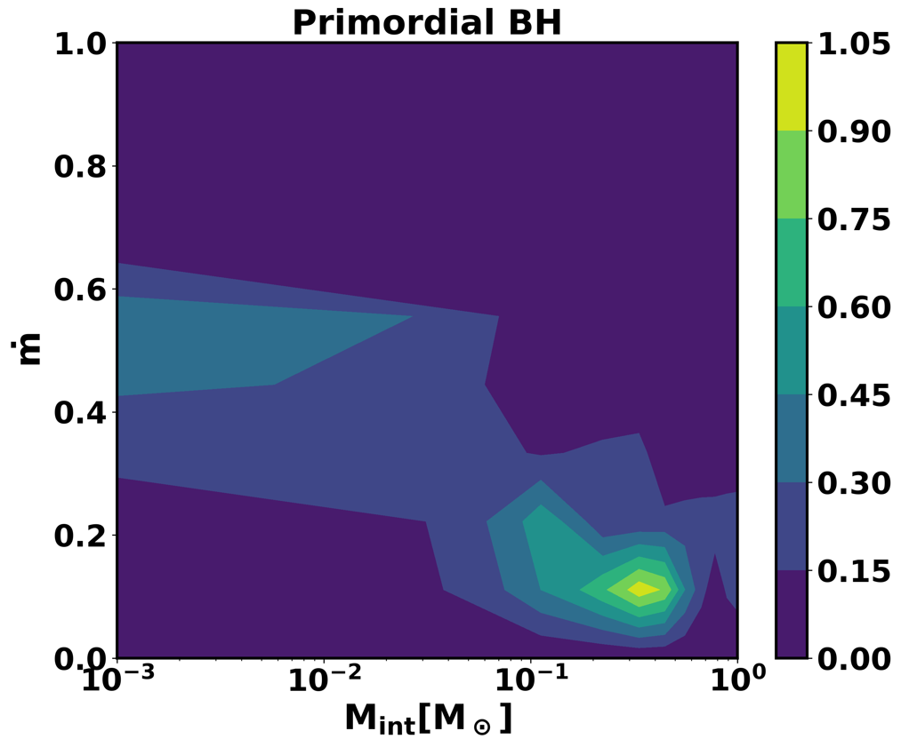
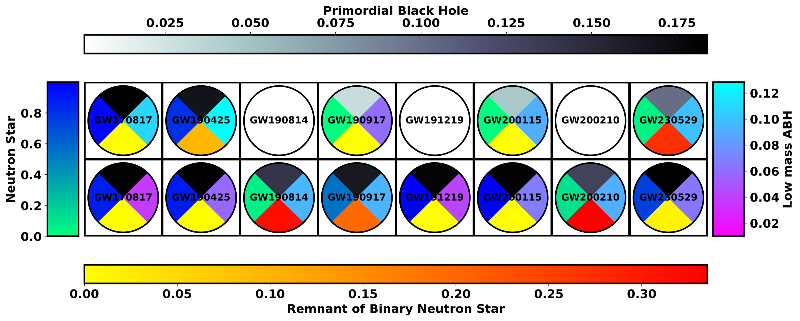
Many of these objects remain genuinely ambiguous, and that is itself the result: with today's sensitivity and a handful of events, several pathways overlap. Tidal deformability, electromagnetic counterparts and, with next-generation detectors, the different redshift histories of each channel will break these degeneracies.
04 — Looking aheadA map that sharpens with every event
Each observing run fills in more of the phase space. Next-generation detectors such as Cosmic Explorer and the Einstein Telescope will add many thousands of events out to high redshift, where channels that look alike today separate through their different merger histories.
The framework is built to grow with them. New formation channels, new observables such as eccentricity, tidal deformability and electromagnetic counterparts, and evolution with redshift, for example driven by the changing metallicity of stars, all enter as new dimensions or new trajectories in the same map, turning a catalogue of events into a history of how compact objects form.
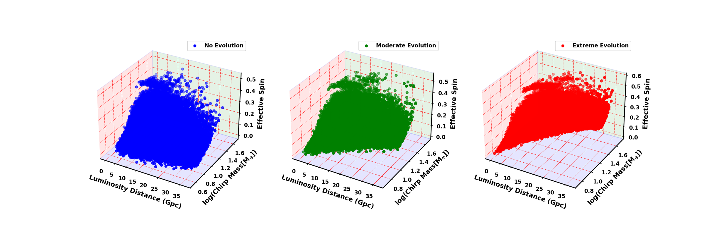